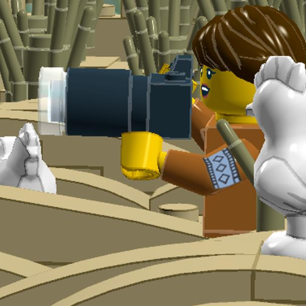
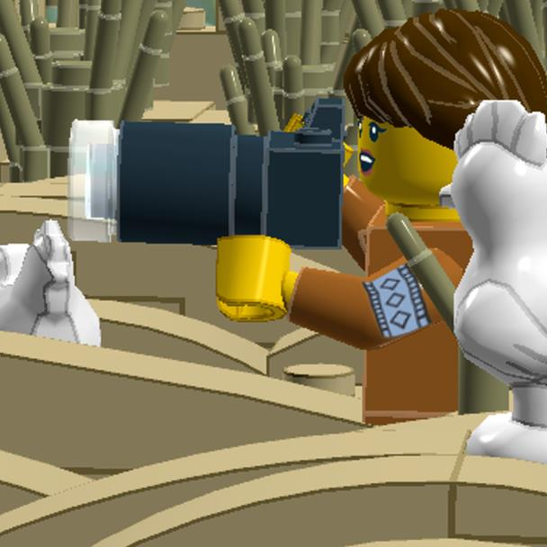

What's LegoToR
LegoToR delivers the core for rendering LEGO Digital Designer scenes including advanced shaders, lights, and geometry with RenderMan
Toy Story 4 © Disney/Pixar
LegoToR delivers the core for rendering LEGO Digital Designer scenes including advanced shaders, lights, and geometry with RenderMan
Inside Out © Disney/Pixar
Now you can get out-of-box production tools straight from Pixar Animation Studios, including materials and light transport... no development required.
Physically based shading allows RenderMan to deliver highly realistic lighting with minimal setup, including full support for multi-bounce ray traced global illumination and ray traced subsurface scattering. Much research and development has gone into making these traditionally expensive effects a production reality. Pixar's first feature film to use this technology was Finding Dory, and now it has matured with great developments in Cars 3, Coco, and Incredibles 2.
Jurassic World: Fallen Kingdom © Universal Pictures
-Equilibrium, user at Eurobricks
Advanced renderer
LegoToR relies on RenderMan rendering technology which has been used in blockbusters such as Toy Story, Jurassic Park, Avatar, and The Lord of the Rings.
 

RenderMan is a proven rendering solution and delivers high quality output for studios such as Pixar, ILM, Animal Logic and many more. RenderMan has been used to create digital visual effects for Hollywood blockbuster movies such as Beauty and the Beast, The Lion King, Terminator 2: Judgment Day, Toy Story, Jurassic Park, Avatar, Titanic, Star Wars, and The Lord of the Rings. LegoToR now provides you with a solution to render your LDD files with the same power as Hollywood.
Checkpointing
LegoToR can resume interrupted renders via RenderMan, redefining the creative process.


Checkpointing allows the renderer to make repeated passes over the image, refining it a bit more with each pass. While the image will be quite noisy during the initial passes, it is usually sufficient to give an impression of how the final image will look, instead of having to wait for a final frame, allowing reviews and more iterations of your scenes.
Digital Bricks
Discover how LegoToR is helping to reach new heights for photorealistic digital bricks.


RenderMan was the first VFX commercial renderer in the industry to ship with a physically based model for subsurface scattering, a truly accurate model for photorealistic skin based on deep path tracing and albedo controls.
Until now, the implementations available to the VFX industry for these effects have been substantial approximations, which inherently produced errors and artifacts. RenderMan's new subsurface approach significantly increases quality and realism when rendering skin and other soft or delicate materials, which is essential for creating believable characters.
Secondary Passes
RenderMan AOV and LPE passes provide robust workflows for compositing feature animation and VFX.


RenderMan provides elegant methods for breaking visual effects down into secondary passes for compositing, including DeepEXR and Cryptomatte support. With support for both AOVs and Light Path Expressions, RenderMan offers a multitude of ways of writing any element of a render (SSS, Diffuse, Shadows, Z-Depth, Object IDs, Per-Light AOVs, etc.) into many popular formats.
LegoToR is up to 2x overall faster then other solutions, thanks to using RenderMan architecture.
Incredibles 2 © Disney/ Pixar
-Paulo Duarte - Art Challenge Finalist
Numbers are compared using LegoToR vs Bluerender
| |
|
||
|---|---|---|---|
| Seamless Integration | ✅ | ✅ | ✅ |
| Fully Open Source technology | ✅ | ❌ | ❌ |
| Latest RenderMan Features | ✅ | ❌ | ❌ |
| Alpha Channel support | ✅ | ❌ | ❌ |
| Advanced Denoiser Technology | ✅ | ❌ | ❌ |
| Logo on studs | ❌ | ✅ | ✅ |
| Support for flex parts | ✅ | ✅ | ✅ |
| Image Based Lighting | ✅ | ❌ | ❌ |
| Path Traced Subsurface Scattering | ✅ | ❌ | ❌ |
| Free of charge | ✅ | ✅ | ✅ |
| Pixar Surface Material System | ✅ | ❌ | ❌ |
| Fully integrated with LDD | ✅ | ✅ | ❌ |
| Secondary Passes (AOV - LPE - Light Groups) | ✅ | ❌ | ❌ |
| RIB Archives | ✅ | ❌ | ❌ |
| 64-bit support | ✅ | ❌ | ❌ |
| Particles | ✅ | ❌ | ❌ |
| Object based lightning | ✅ | ❌ | ❌ |
| Advanced Camera system | ✅ | ❌ | ❌ |
| Brick colors based on colorimetric measurements | ✅ | ❌ | ❌ |
| Unlimited Multi-Threaded Rendering | ✅ | ❌ | ❌ |
| Support for Multiple Integrators | ✅ | ❌ | ❌ |
RenderMan version 23 delivers significant improvements to production pipelines with robust USD support, while also offering new features for look development workflows. A key aspect of RenderMan version 23 is support for the new Houdini 18 native USD “Solaris” workflows, enabled by RenderMan’s USD Hydra delegate. These new tools are the result of close collaboration between SideFX and Pixar’s RenderMan & USD teams.
Learn MoreRenderMan and USD are both technologies developed at Pixar Animation Studios to address the challenges of feature film production. In version 23 Renderman delivers the next generation of integration between these tools to the broader community. In production environments using multiple applications (such as Maya, Katana, and Houdini), USD can enable a new level of reliable, efficient, flexible collaboration, including sharing of animated geometry, materials, and lights. Complex scenes constructed from USD assets need not be expanded entirely in your front-end application, meaning that productions can scale larger on existing tooling. Features such as lightweight conditional edits and super fast variation management and instance generation help artists respond creatively to increasing production demands. With USD support planned or released from vendors like SideFX, Autodesk, Foundry, and Nvidia, this new technology will play an increasingly important role in production pipelines, and RenderMan’s support for USD is a critical part of future studio roadmaps across the industry.
RenderMan 23 extends support for interactive “always on” rendering at more stages of the pipeline, improving on the groundwork set by version 22. New and enhanced interactive rendering features allow artists to make better choices without restarting renders, improving productivity in all stages of the pipeline, throughout modeling, grooming, layout, animation, shading, lighting, and into pro-level controls on cameras, frame resolutions, LPEs, and more.
Yes. RenderMan offers a complete set of ready to use rendering and artist tools, but it also retains its storied ability to be profoundly customized by experts who want to develop unique looks or unique pipelines around the RenderMan core. A fundamental aspect of the RIS architecture is the ability to replace components or even entire renderer subsystems with custom plug-ins or scriptable elements, such as for BxDFs, Patterns, Projections, Integrators, LightPathExpressions, and more. All of the traditional aspects of custom geometric proceduralism are still supported as well, such as programmatic generation of particles, hair, or foliage. This customizability is more robust than ever thanks to our support and commitment to Pixar’s USD and its deep pipeline toolset.
We are planning to publish the new APIs at a later date. They will not be published with RenderMan version 23. We are keeping them private so that we can iterate on them to make sure they are properly structured and fully featured before we release them publicly in a subsequent version of RenderMan. A few of our closest partners will be helping us in this process.
No. RenderMan exists in one standard version for everyone and the technology that Pixar develops for RenderMan has always been delivered to the entire RenderMan community through the productization efforts of the RenderMan team. It is RenderMan’s famous underlying flexibility that allows individual studios to customize the renderer via their own, shaders, plug-ins and other pipeline tools.
Pixar provides artist-friendly, deeply integrated RenderMan interface plug-ins for Autodesk's Maya®, The Foundry's KATANA®, and Side Effect’s Houdini®. Please refer to our tech-specs page for details of version compatibility for each new release.
We track the applications that are most important to productions at Pixar, ILM, and our community of commercial customer studios, and we frequently evaluate additional deep integrations within other Digital Content Creation applications. An important aspect of RenderMan version 22 has been re-engineering our live rendering interfaces specifically to allow easier, faster, and better integrations into new artist tools. We understand the power and capabilities of applications such as Cinema4D and Blender, and the strong interest in them, particularly from the Non-Commercial RenderMan community. We are pursuing integrations for these applications, and others, sometimes through third parties, as commercial priorities allow. Please contact us at rendermansales@pixar.com and we can help you find the best solution for your requirements.
Yes. New purchases of RenderMan include a matching number of Tractor licenses. Tractor is also available separately at $100 per license.
Pixar has been using and developing various special purpose GPU renderers internally for several years. Building on that experience, the experimental RenderMan XPU project is a flexible and modern approach to combining CPU+GPU computations for faster rendering when powerful GPU processors are available – though it can always fully render with the CPU only if necessary. Development of this exciting internal project is ongoing, and achieving significant milestones, but no external release date has been set.
Inside Pixar, the RenderMan and USD teams work closely with each other, both on studio filmmaking projects as well as on crafting useful next-generation pipeline tools for the animation and VFX communities. Both teams also draw significant inspiration and feedback from those communities, and are committed to making the tools work well together in many contexts. RenderMan version 23 is a major evolution in this ongoing development and exemplifies our commitment to active USD support.
There are a number of research initiatives within the Disney Studio organization including Pixar, Walt Disney Feature Animation (WDAS), Industrial Light & Magic (ILM), Disney Research in Zurich, and others. Each of these groups is separate so they pursue different approaches to rendering and solving production problems in different ways. No other rendering R&D effort can compare with the resources and depth of experience embodied in the Disney organization and its decades of experience defining the state of the art in animation and film rendering. RenderMan is the conduit through which tools and techniques that derive from this R&D effort will be channeled into the public domain. Pixar and these other Disney groups describe their significant contributions regularly at commercial and technical research venues around the world.
RenderMan costs $595 per license, providing access to either the artist interface or the batch renderer. For larger requirements over 25 licenses, and especially over 250 licenses, attractive studio pricing and payment packages are available. Usage based cloud licensing is available through various cloud compute vendors separately. Rentals and special short-term burst capacity options are also available.
Yes. Maintenance is $250 per RenderMan license for commercial users and includes full support and upgrades throughout the renewable 1-year term of the agreement.
Several licensing models are available. Traditional perpetual licenses are what many studios continue to choose. These licenses allow you to run the version of RenderMan available at purchase time for as long as you like, for an up-front purchase price. By purchasing recurring annual maintenance for those initial licenses, they can be upgraded to new major releases immediately as they become available. License rentals provide access to the current release for a short term, then the licenses expire. For studios needing a large number of licenses, RenderMan is also available in fixed-term bundles with annual billing on an attractive discount schedule.
All commercial RenderMan licenses are available as floating, providing the flexibility to deploy RenderMan anywhere on your network. However, node locked licenses are available if required.
The free Non-Commercial version of RenderMan has been updated to version 23 and is currently available for download.
No, Non-Commercial RenderMan downloads are updated to the latest available version in order to keep the research community up to date, simplify community support, and to ensure that tool developers have a consistent target platform.
No. There is only one RenderMan and the free non-commercial RenderMan is exactly the same as the commercial version. There are no watermarks, no time limits, and no reduced functionality. The only limitation is that upon acceptance of the EULA at installation, the software must only be used for non-commercial purposes. Technical support for Non-Commercial RenderMan is supplied by the active and highly technical community itself.
In general, no. Non-Commercial RenderMan is intended for individual use. For classroom deployment or other educational use cases, please contact RenderMan Sales to discuss whether other options such as floating license grants may apply.
Get LogoYes. Non-Commercial RenderMan cannot be used directly for commercial use, but we encourage you to use RenderMan as a development platform for your own tools, technologies, and complementary solutions that are made available to the community commercially.